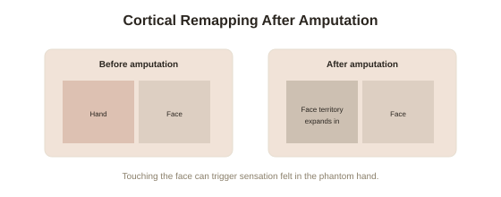

Chapter 4: Cortical Remapping — Phantom Limbs and the Mirror Box
Chapter 3 established that most adult plasticity is rewiring, not new-neuron growth. This chapter shows just how dramatic that rewiring can get, using one of neuroscience's strangest and most instructive phenomena: people who lose a limb, and continue to feel — sometimes painfully — a limb that is no longer there.
Phantom limbs, and what they reveal about the brain's map
Up to roughly 80% of people who undergo limb amputation report phantom limb sensation — the continued, often vivid feeling that the missing limb is still present, sometimes accompanied by chronic pain that standard treatments struggle to address, since there's no physical tissue left to treat. For decades this was poorly understood. The modern explanation, developed substantially by neuroscientist V.S. Ramachandran, connects directly to how the brain maps the body: the somatosensory cortex contains a distorted but orderly map of the entire body's surface, with neighboring body parts generally represented in neighboring cortical regions — and after an amputation, the cortical territory that used to represent the missing limb doesn't go dormant. Neighboring regions, still very much active, gradually invade and remap that now-vacant territory.
The face-hand connection that proved the remapping theory
Ramachandran's key evidence came from a striking observation: in the brain's cortical body map, the region representing the face sits directly adjacent to the region representing the hand. In patients with an amputated arm, he found that lightly touching specific areas of the face reliably produced a sensation the patient reported feeling in their phantom hand — different facial locations mapped, with real consistency, onto different phantom fingers. This is a direct, testable confirmation of cortical remapping: face-related sensory input was being processed, in part, by neurons that used to handle hand-related input, exactly as the adjacent-map theory predicted, and the phantom sensation was the conscious experience of that remapped processing.

The mirror box: using remapping to treat pain, not just explain it
Ramachandran's most influential practical contribution was the mirror box — a simple device using a mirror positioned so a patient's intact limb appears, from their own viewing angle, to occupy the space where the phantom limb would be. Moving the intact limb while watching its mirror reflection creates a compelling visual illusion that the phantom limb is moving too, and in a meaningful share of patients with phantom limb pain (particularly pain associated with a phantom limb "frozen" in an uncomfortable clenched position), this visual feedback measurably reduces reported pain — a striking case of using one sensory channel (vision) to directly override maladaptive processing in another (the remapped somatosensory representation), and a good early illustration of a theme returning throughout this arc: understanding a plastic mechanism in enough detail often leads directly to a way of deliberately working with it.
Remapping after stroke: harder, slower, and load-bearing for rehabilitation
A related but distinct form of cortical remapping occurs after stroke damages a specific brain region controlling movement or language. Rather than that function simply being lost permanently, surrounding or even more distant brain regions can, with the right kind of sustained retraining, gradually take over some of the damaged region's role — the basis for constraint-induced movement therapy, where a stroke patient's unaffected limb is deliberately restrained for extended periods, forcing intensive, repeated use of the affected limb. Multiple controlled trials have found this produces meaningfully better functional recovery than standard rehabilitation alone, and brain imaging of patients undergoing it shows exactly the kind of remapping this chapter has been describing — a direct, clinically important, outcome-improving application of the same underlying mechanism responsible for phantom limb sensation.
A useful, honest caveat about the limits of this remapping
It's worth being clear that cortical remapping, however dramatic, is not unlimited — the degree and speed of remapping tends to decline with age, the extent of damage matters considerably, and constraint-induced therapy's benefits, while real, are typically measured in meaningful functional improvement rather than complete restoration of pre-injury capability. This is a genuine instance of this arc's recurring theme (also touched on in Chapter 1, and returned to directly in Chapter 10): the mechanism is real and exploitable, but it operates within real biological limits, not without them.
Try this
Ideas for noticing or testing this in your own life.
- Consider the mirror box as a template for a broader principle: a strong, well-targeted sensory or visual input can sometimes override a maladaptive neural pattern more effectively than willpower or direct effort aimed at the pattern itself.
- Notice the general shape of constraint-induced therapy — deliberately restricting the easy option to force engagement with the harder, more valuable one — as a pattern that shows up well beyond stroke rehabilitation, in ordinary skill-building generally.
Worth pulling on?
A few loose threads from this chapter — if any of these genuinely grab you, that's a good sign of where to go next.
- The mirror box shows expectation and perception directly overriding a physical sensation — a striking early case of belief-adjacent mechanisms shaping outcomes, developed much further from here. → The subject of the next chapter: belief, expectation, and the brain.
- Expectation measurably shaping physiological experience is a theme covered from a completely different angle elsewhere in this library. → Already in the library: Placebo & Nocebo Effects covers expectation-driven physiological change in detail.